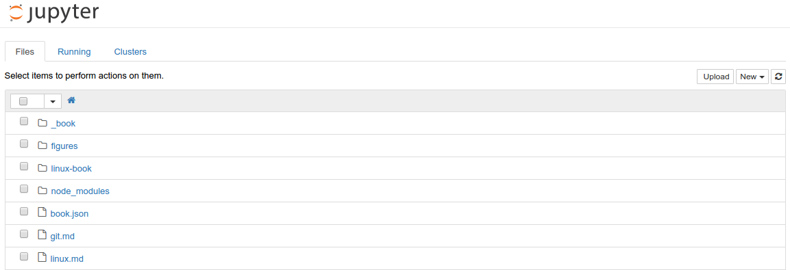
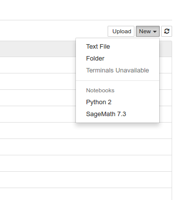
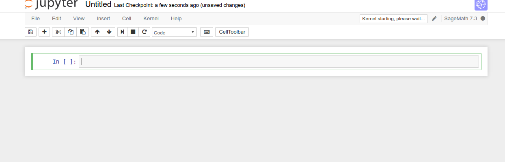
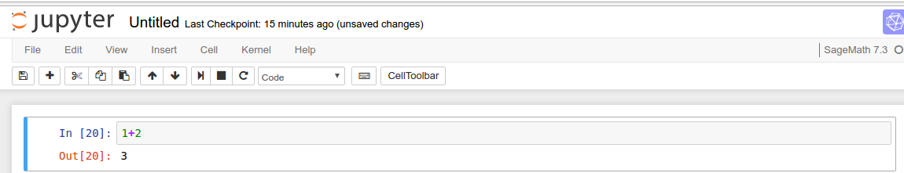
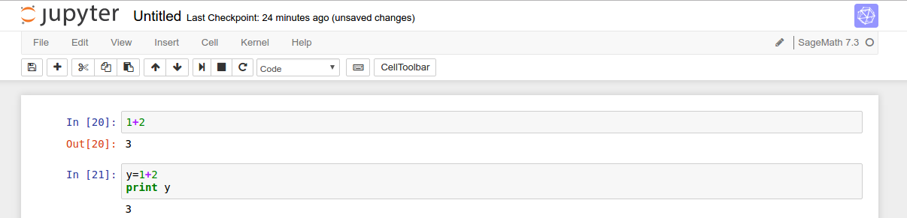

Ubuntu 系统的安装与配置
本节主要介绍 ubuntu 的安装和配置过程, 完成这一过程就可以得到一个方便使用的系统.
简介
Ubuntu 是一个以桌面应用为主的 Linux 操作系统,其名称来自非洲南部祖鲁语或豪萨语的 “ubuntu” 一词(译为吾帮托或乌班图),意思是“人性”、“我的存在是因为大家的存在”,是非洲传统的一种价值观, 类似华人社会的“仁爱”思想.Ubuntu 基于 Debian 发行版和 GNOME 桌面环境,与 Debian 的不同在于 它每6个月会发布一个新版本.Ubuntu 的目标在于为一般用户提供一个最新的、同时又相当稳定的主要 由自由软件构建而成的操作系统.Ubuntu 具有庞大的社区力量,用户可以方便地从社区获得帮助.
自由软件
Ubuntu 项目完全遵从开源软件开发的原则;并且鼓励人们使用、完善并传播开源软件.也就是 Ubuntu 目前是并将永远是免费的. 然而,这并不仅仅意味着零成本,自由软件的理念是人们应该以所有 “对社会有用”的方式自由地使用软件.“自由软件”并不只意味着您不需要为其支付费用,它也意味着 您可以以自己想要的方式使用软件：任何人可以任意方式下载、修改、修正和使用组成自由软件的代码. 因此,除去自由软件常以免费方式提供这一事实外,这种自由也有着技术上的优势：进行程序开发时, 就可以使用其他人的成果或以此为基础进行开发.对于非自由软件而言,这点就无法实现,进行程序开发 时,人们总得白手起家.基于上述原因,自由软件的开发是迅捷、高效和激动人心的!桌面环境
Ubuntu 默认桌面环境采用 GNOME(The GNU Network Object Model Environment,GNU 网络对象模型环境), 一个 UNIX 和 Linux 主流桌面套件和开发平台.另一个 UNIX 和 Linux 主流桌面环境是 KDE(K桌面环境, K Desktop Environment).后备与支持
Ubuntu 由一个快速壮大的社区进行维护, 可以免费得到社区及专业机构的支持.Kubuntu、Xubuntu、 Edubuntu 和 Goubuntu 是 Ubuntu 计划正式支援的衍生版本. Kubuntu 和 Xubuntu 分别将 KDE 与 Xfce 桌面环境带入 Ubuntu.Edubuntu 则是一个为了学校教学环境而设计,并且让小孩在家中也可 以轻松学会使用的衍生版本.而Goubuntu则是完全使用开源软件基金会认定的自由软件构建的发行版本.文件结构
Windows 的文件结构是多个并列的树状结构,最顶部的是不同的磁盘（分区）,如：C,D,E,F等. 而 Linux 的文件结构是单个的树状结构.可以用 tree 进行展示. 在 Ubuntu下安装 tree（sudo apt-get install tree）, 并可通过命令来查看.每次安装系统的时候我们都会进行分区,Linux 下磁盘分区和目录的关系如下：- 任何一个分区都必须挂载到某个目录上.
- 目录是逻辑上的区分.分区是物理上的区分.
- 磁盘Linux分区都必须挂载到目录树中的某个具体的目录上才能进行读写操作.
- 根目录是所有Linux的文件和目录所在的地方,需要挂载上一个磁盘分区.
系统安装
- 将 ubuntu 的启动插在电脑上,重启电脑,开机时按 F12； 但是对于有些电脑按 F12 没反应,先查查该电脑的启动键是 哪一个,再根据不同型号的电脑按相应的键；如果上述过程 做了还是没反应,那么查查电脑是否真正的关机,对于有些 电脑为了方便它是处于睡眠状态,没有真正的关机, 这时侯按照 shift + 关机键,使电脑关机以后再按相应的相应 键启动．出现下图:

- 图中显示 try ubuntu 和 install ubuntu 两个按钮, 第一个是体验 ubuntu系统,第二个是直接安装 ubuntu 系统, 可以体验之后再安装,也可以也可直接安装．点击 install ubuntu 之后,出现下图:

- 不选择安装第三方软件,点击继续；出现下图:

- 安装类型选择其他,这样我们可以自己选择分区,继续,出现下图:

- 分区设置, 点击"-" 把 Window 下划分出的磁盘空间变成空闲分区,选中空闲分区, 新建分区,点击“+” , 设置交换空间 swap, 这里电脑内存是多少 G 就划分多少； 新建分区,点击“+” , 设置“/”主分区, 相当于 Win7 的系统 C 盘, 同样的方 法, 将剩余空间设置“/home”分区, 用于存文件,如下图所示:

- 选择上海:

- 选择美国键盘:

- 进入用户设置, 自行设置用户名、密码：

- 进入安装界面,等待安装,安装好之后重启电脑．
应用程序安装
系统安装好之后,我们还得需要一些基本的软件或者程序来帮助我们更好的工作, 因此现在需要安装应用程序.
sagemath
Sage 是一个免费的、开源的数学软件系统,采用GPL协议.它整合了许多开源Python包, 采用Python语言编写,但也支持其他语言.它的目标是创造一个可变的开源软件以替代 Magma、Maple、Mathematica和Matlab.Sage不仅是一个软件,也是一个编程环境,提供 命令行模式、笔记本模式,可以编写编译型程序和解释型程序.目前Sage支持Linux、 Mac OS X、BSD、Solaris平台. 项目主页是http://www.sagemath.org/.
Sage程序较大,但是提供了网络接口,就是说,用户可以在不安装整个程序的情况下, 在服务器上运行 Sage 的笔记本模式.可以通过扩展阅读中提供的地址注册账号免费试用. 也可以在自己的服务器上架设 Sage.使用时,可以随时点击右上角的Help获取帮助.对于 使用 Sage 基本功能的四则运算、微积分、线性代数、数论图论等,网络版 Notebook 完全 可以应付.如果需要3D作图,需要浏览器支持 Java.
sagemath 安装：
sudo apt-get -y install sagemath-upstream-binary
Jupyter
Jupyter Notebook（此前被称为 IPython notebook）是一个交互式笔记本,支持运行 40 多种编程语言. 这对于希望编写漂亮的交互式文档的人来说是一个强大工具.在开始使用 notebook 之前,我们先需要 安装该库.可以在 Jupyter 官网上找到完整的步骤.
- 基本用法
- 会在你开启 notebook 的文件夹中启动 Jupyter 主界面,如下所示： 
- 如果想新建一个 notebook,只需要点击 New,选择你希望启动的 notebook 类型即可.  这里,因为我只有一个 sagemath 和 python 两个内核,所以我们运行一个 sagemath notebook. 在新打开的标签页中,我们会看到 notebook 界面,目前里面什么也没有. 
- notebook 界面由以下部分组成：
- notebook 的名称;
- 主工具栏,提供了保存、导出、重载 notebook,以及重启内核等选项;
- 快捷键;
- notebook 主要区域,包含了 notebook 的内容编辑区;
- 下方的主要区域,由被称为单元格的部分组成.每个 notebook 由多个单元格构成,而每个单元格
又可以有不同的用途. 下图中看到的是一个代码单元格（code cell）,以[]开头.在这种类型的
单元格中,可以输入任意代码并执行.例如,输入1 + 2并按下Shift + Enter.之后,单元格中
的代码就会被计算,光标也会被移动动一个新的单元格中.会得到如下结果：

接下来,我们在第二个单元格中输入些其他代码,例如,输入
会得到： y=1+2 print y
这次没有出现类似Out[20]这样的文字.这是因为我们将结果打印出来了,没有返回任何的值. 我们需要编辑文本内容,那么使用其他类型的单元格,Markdown单元格.退出编辑,按 m 进入 markdown 单元格.markdown 单元格还支持 LaTex 语法.例如,输入
{% math %}\frac{\partial y}{\partial t} + t = x{% endmath %}
显示如下结果：
- 单元格操作
- 如果想删除某个单元格，可以选择该单元格，然后依次点击Edit -> Delete Cell；
- 如果想移动某个单元格，只需要依次点击Edit -> Move cell [up | down]；
- 如果想剪贴某个单元测，可以先点击Edit -> Cut Cell，然后在点击Edit -> Paste Cell [Above | Below]；
- 如果你的 notebook 中有很多单元格只需要执行一次，或者想一次性执行大段代码， 那么可以选择合并这些单元格。点击Edit -> Merge Cell [Above | below].
- 导出功能
notebook 还有一个强大的特性，就是其导出功能。可以将 notebook 导出为多种格式：
- HTML
- Markdown
- ReST
- PDF（通过 LaTeX）
- Raw Python
gitbook
基本配置
Mentohost
vim
git
chrome
自动配置脚本
- 访问 Google
- 聊天工具